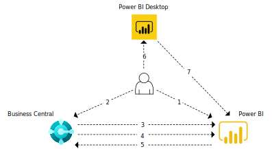

Übersicht über die Power BI-Integrationskomponente und -Architektur
In diesem Artikel erfahren Sie etwas über die verschiedenen Aspekte der Power BI-Integration mit Business Central, damit Sie die Implementierung und Verwendung besser verstehen.
Komponenten
In der folgenden Tabelle werden die wichtigsten Komponenten der Power BI-Integration beschrieben.
| Komponente | Beschreibung |
|---|---|
| Power BI | Ein cloudbasierter Hosting- und Verwaltungsdienst für Berichte. |
| Power BI Desktop | Ein Erstellungstool für Berichte und Dashboard, mit dem Sie Berichte ausführen können. Es ist als kostenloser Download im Microsoft Store erhältlich und wird lokal installiert. |
| Business Central | Dieses Tool ist als online oder lokale Lösung mit Connectors für Power BI erhältlich und kann als Power BI-Teil eingebettet werden. |
Von Beginn an verfügbar
Die verfügbaren Funktionen werden in der folgenden Tabelle beschrieben.
| Funktion | Support für Business Central online oder on-premises |
|---|---|
| Power BI-Connectors | Beide. Verschiedene Connectors für online und on-premises. Gleicher Connector für Power BI Desktop und Power BI-Dienst |
| Eingebettete Erfahrung zum Anzeigen eines bestimmten Berichts in einer Infobox in Business Central | Beide. Erfordert eine Konfiguration zum Anzeigen von Berichten für lokale Version. |
| Power BI-Berichtsverwaltung über Business Central | Online |
| Power BI-Standardberichte in Rollencentern bereitgestellt für Power BI | Online |
| Power BI-Apps auf Microsoft AppSource | Online |
Architektur
Business Central wird über einen Connector mithilfe von OData mit Power BI integriert. Die Datenquelle für Power BI-Berichte wird als API-Seiten und OData-Webdienste dargestellt.
:::image type="content" source="./media/power-bi-architecture.svg" alt-text="Bild-Alt-Text" lightbox="./media/power-bi-architecture.svg":::
Ab Februar 2022 werden Power BI-Berichte für Business Central online von einer sekundären, schreibgeschützten Datenbankreplik bezogen. Die Datenbankreplik ist Teil der Lesen von Scale-out Funktionalität in Business Central online. Diese Konfiguration gibt die Hauptdatenbank für Transaktionen frei, was die Leistung des Systems verbessert. Die Verbindung mit der schreibgeschützten Datenbankreplik ist ein integraler Bestandteil des Business Central Online Konnektors und erfordert keine zusätzliche Einrichtung Ihrerseits. Alle neuen Berichte werden standardmäßig mit der schreibgeschützten Datenbankreplik verbunden. Alte Berichte verwenden weiterhin die Hauptdatenbank. Weitere Informationen finden Sie unter Business Central 2021 Veröffentlichungszyklus 2 Plan.
Allgemeiner Ablauf
Das folgende Diagramm zeigt den grundlegenden Workflow für Benutzer beim Herstellen einer Verbindung zwischen Business Central und Power BI.

- Der Benutzer registriert sich für ein Power BI-Konto.
- Der Benutzer stellt eine Verbindung zwischen Power BI und Business Central her.
- Business Central überprüft die Lizenz.
- Business Central stellt Standardberichte für den Power BI-Dienst. Dieser Schritt ist nur für Business Central online relevant.
- Business Central stellt Berichte in Power BI zur Auswahl in Business Central zur Verfügung. Standardberichte werden automatisch in Power BI-Teilen angezeigt.
- Der Benutzer erstellt einen Bericht in Power BI Desktop.
- Der Benutzer veröffentlicht den Bericht für den Power BI-Dienst. Die Berichte können dann in Business Central ausgewählt werden.
Siehe auch
Business Central und Power BI
Power BI für Verbraucher
Der „neue Look“ des Power BI Service
Schnellstart: Stellen Sie eine Verbindung zu Daten her in Power BI Desktop
Power BI Dokumentation
Business Intelligence
Vorbereitung für die Geschäftstätigkeit
Importieren von Geschäftsdaten aus anderen Finanzsystemen
Einrichten Business Central
Business Central als Power BI-Datenquelle verwenden
Business Central als Power Apps-Datenquelle verwenden
Business Central in Power Automate verwenden
Kostenlose E-Learning-Module für Business Central finden Sie hier